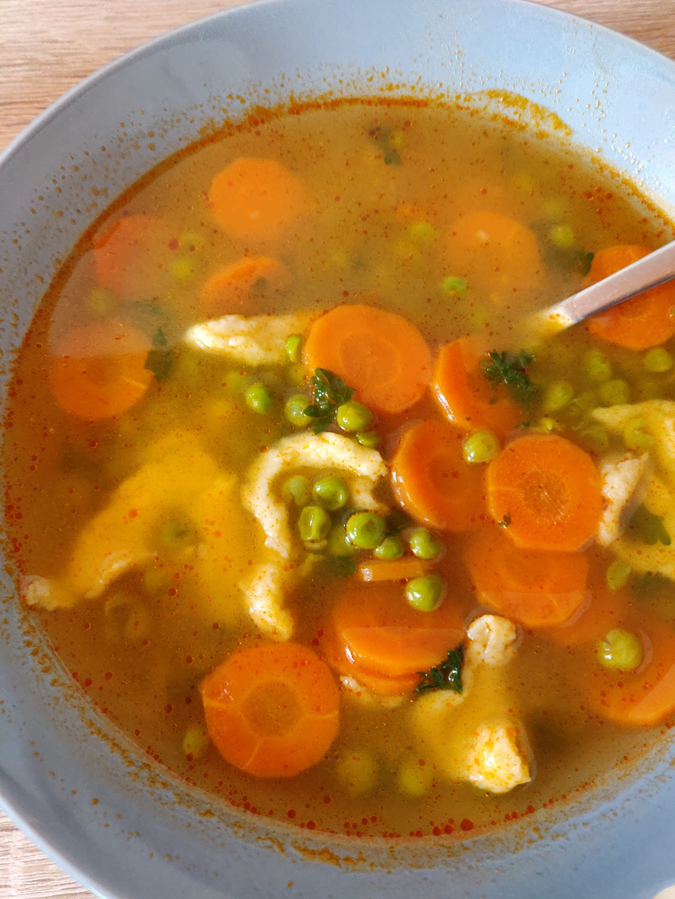

Hozzávalók:
- 3 közepes db sárgarépa
- 2 fehérrépa
- 400 g zöldborsó
- 1 csokor petrezselyem
- 1 ek finomliszt
- 1 tk fűszerpaprika
- 1-1,5 l víz
- só ízlés szerint
- ételízesítő ízlés szerint (leveskocka)
A galuskához:
- 1 bögre finomliszt (2.5 dl) (3 púpozott ek.)
- 1 db tojás
- só ízlés szerint
- víz
Elkészítés:
- Az olajon a karikára vágott répákat megpirítjuk, majd hozzáadjuk a borsót és az apróra vágott petrezselyemzöldjét. Kb. 15 percig pároljuk együtt. Ha kell, nagyon kevés vizet aláöntünk.
- Megszórjuk 1 ek. liszttel és pirospaprikával, majd összekeverjük. Pici ideig pirítjuk.
- Felöntjük a vízzel, sózzuk, ételízesítővel megszórjuk. Puhára főzzük, és közben kóstolgassuk, nem-e kell utánafűszerezni. (kb. 30 perc)
- A galuska hozzávalóiból közepesen kemény nokedli tésztát keverünk, és vágódeszkáról vizes késsel a levesbe szaggatjuk. (vagy 2 kiskanállal...)
https://www.nosalty.hu/recept/edes-borsoleves-galuskaval